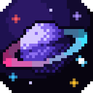

Onix GameHub
Jogos clássicos de Nintendinho, Super Nintendo, Game Boy Advance e Mega Drive, no visual do Onix. Grátis e sem anúncios.
Versão mais nova
📺
Google TV e Android TV
Android TV 5.0 ou mais novo
Baixar para Google TV
- Com o Onix: abra a aba Jogos e clique em Instalar o GameHub. É o jeito mais fácil.
- Sem o Onix: no app Downloader da TV, digite o link abaixo e instale.
github.com/ruan2311/onix-gamehub/releases/latest/download/onix-gamehub.apk
Mandar jogos para a TV
- No GameHub, abra Adicionar jogos (o + no topo).
- Aponte a câmera do celular para o QR code (celular e TV no mesmo Wi-Fi).
- Escolha os jogos no celular: eles chegam na TV com capa e nome.
📱
Celular Android
Android 5.0 ou mais novo · 🧪 experimental
Baixar para Android
- Toque em Baixar e abra o arquivo.
- Se o Android pedir, deixe o navegador instalar apps e toque em Instalar.
- Em Adicionar jogos, toque em Escolher pasta e aponte a pasta dos seus jogos.
Controles na tela e atualização
- Cada console tem os controles na tela; dá para mudar posição, tamanho e transparência.
- Com um controle Bluetooth conectado, eles somem.
- As próximas versões baixam sozinhas, e o GameHub pergunta se pode instalar.
🖥️
PC com Windows
Windows 10 ou 11, 64 bits · 🧪 em teste
Baixar para PC
- Baixe o .zip, extraia e abra o Onix GameHub.exe.
- Se o Windows avisar, clique em Mais informações → Executar assim mesmo.
- Em Adicionar jogos, clique em Escolher pasta: os jogos novos dela entram sozinhos a cada abertura.
Teclado e controles
- Controles de Xbox, PlayStation e 8BitDo funcionam direto.
- Teclado: setas, X = A, Z = B, Enter = Start. Esc abre o menu; F11, tela cheia.
- Segure Tab para acelerar e Backspace para rebobinar.
⏯️Continuar jogandoVolta do ponto exato onde parou, com a imagem do momento.
💾Estados salvosQuatro espaços por jogo, cada um com miniatura.
📺Filtros de imagemNítido, CRT, LCD e, no PC, CRT curvado e fundo ambiente.
🎮Do seu jeitoControle 1 e 2, trocar botões, trapaças, avançar e rebobinar.
 PROJECT GEMS by Ruan
PROJECT GEMS by Ruan